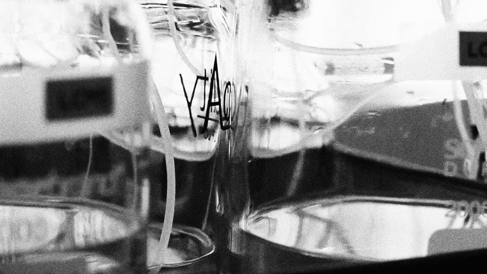
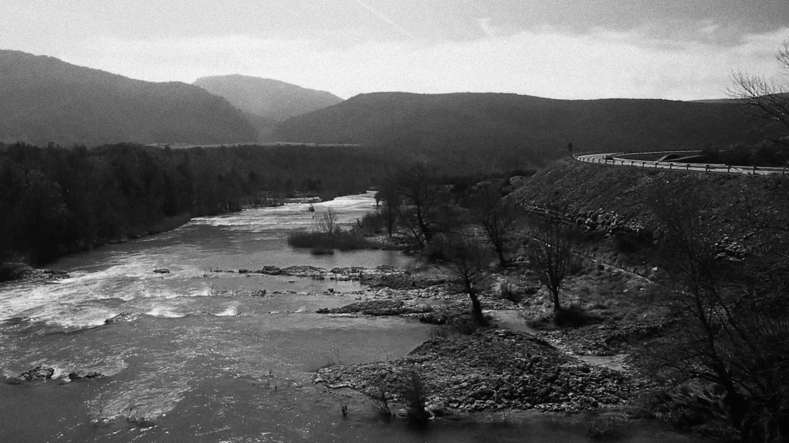
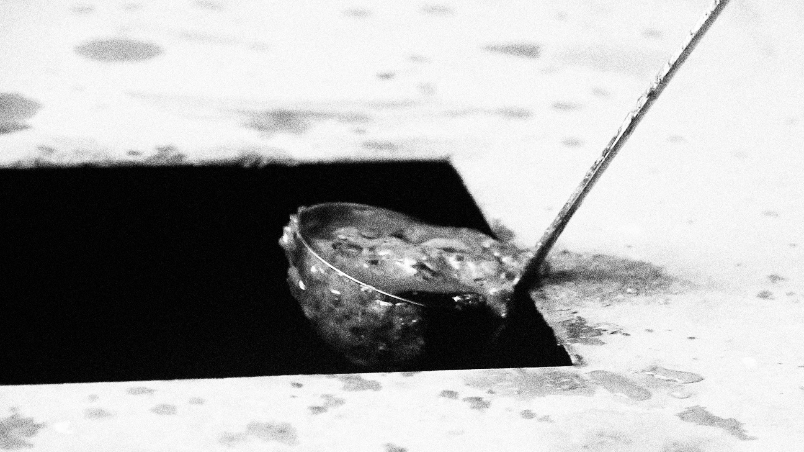
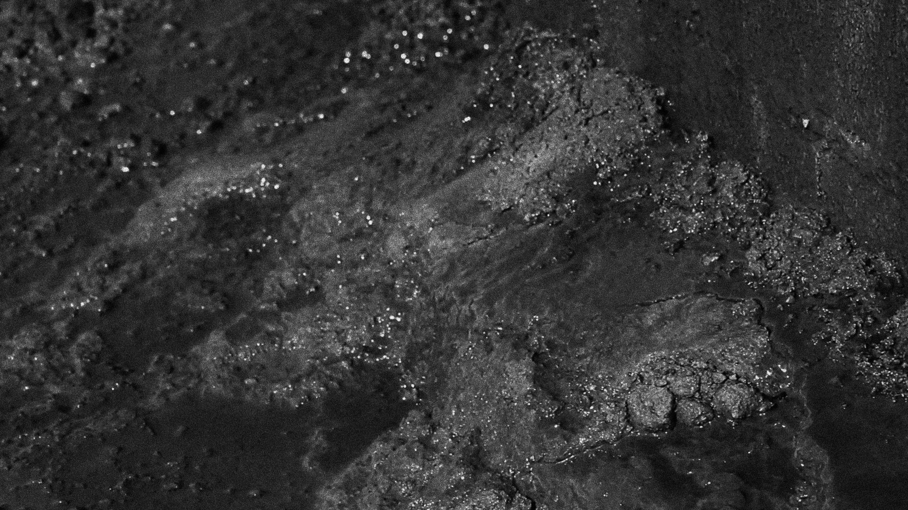
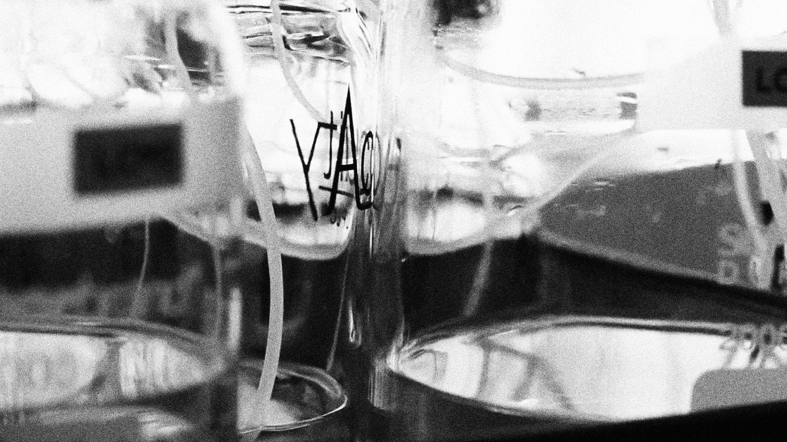
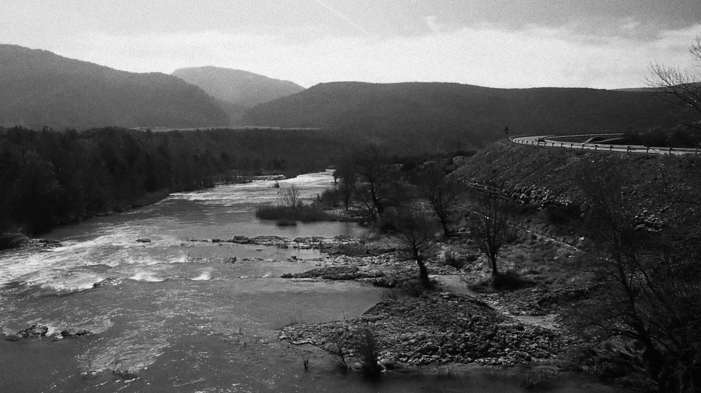
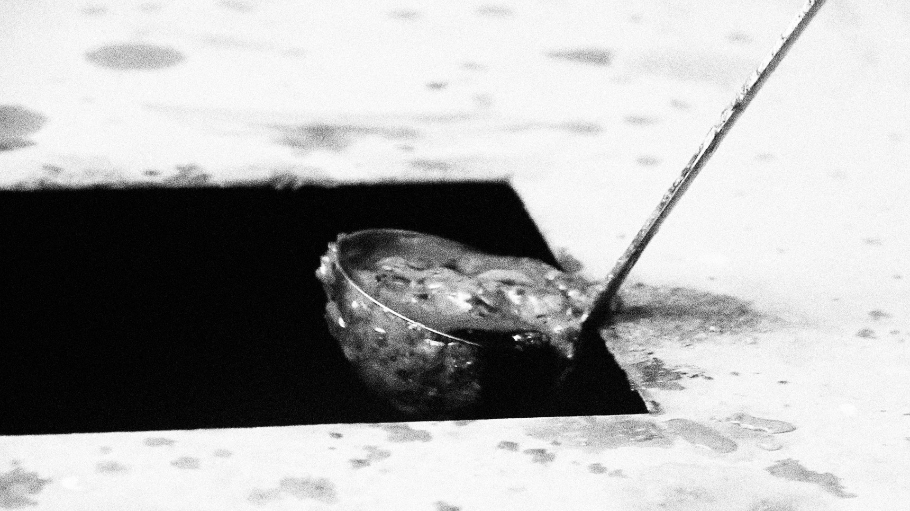
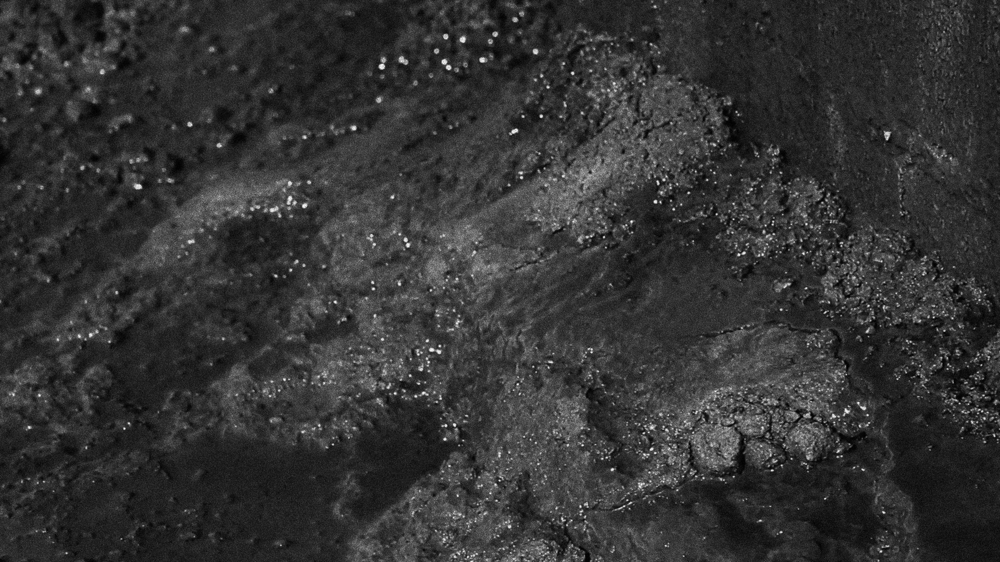
 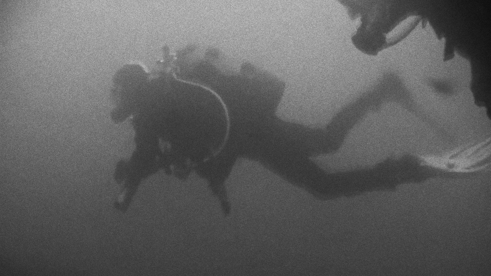
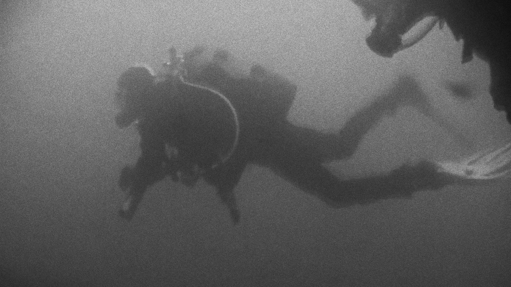


 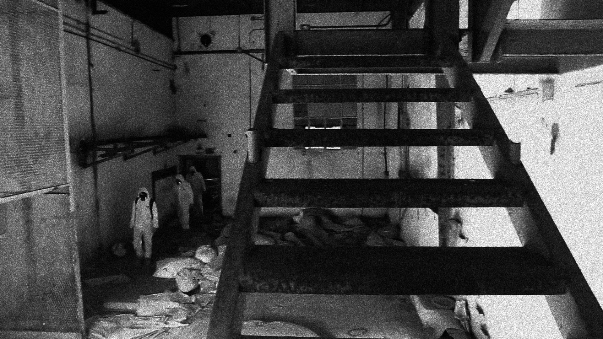
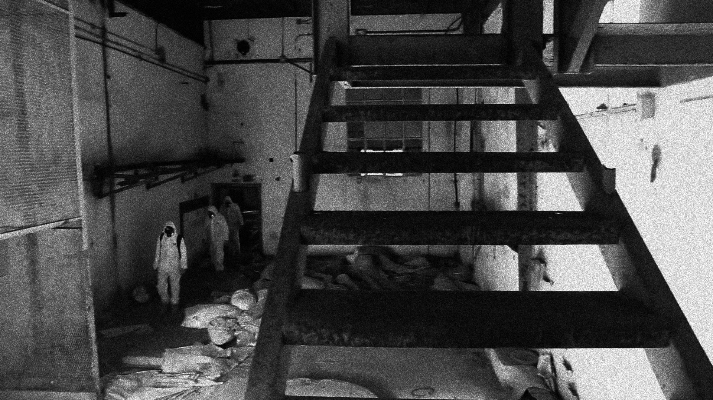


During the summer of 2014, a chemical catastrophe was unearthed in the northern parts of Spain, spreading fear amongst villagers.
I teamed up with some friends, all filmmakers and cameramen, to explore the problem’s roots, and turn them into a documentary.
The final result opened one of Ecozine’s screening halls, our capital’s most important environmental film festival.
This was my initiation to project managing, video production and scriptwriting, as well as in the troubles and glories of teamwork.
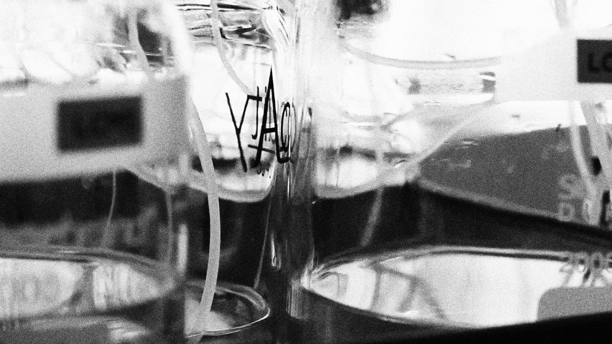
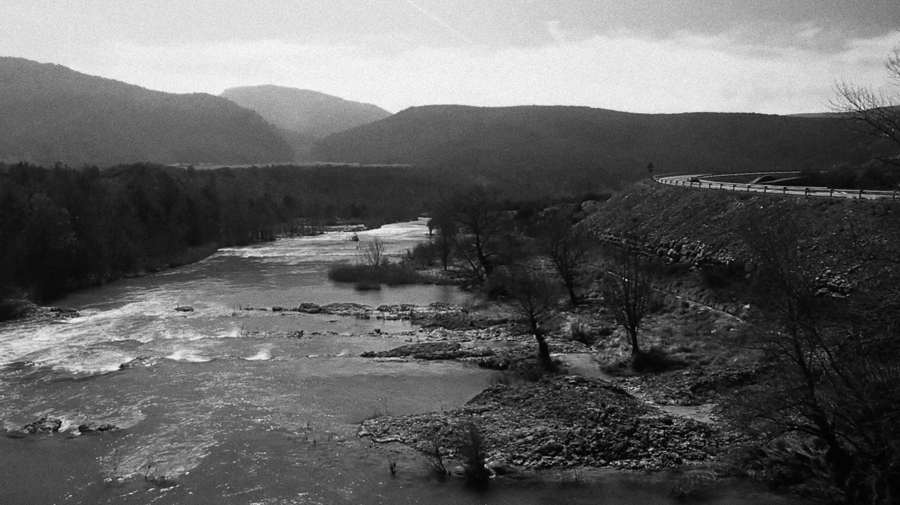
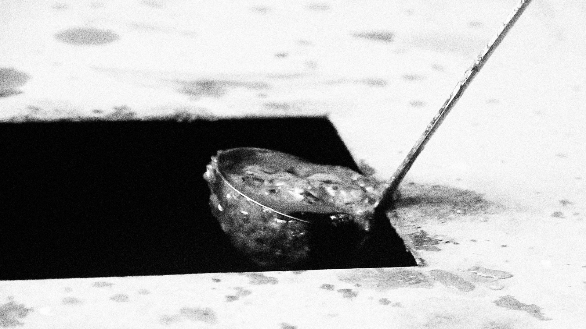
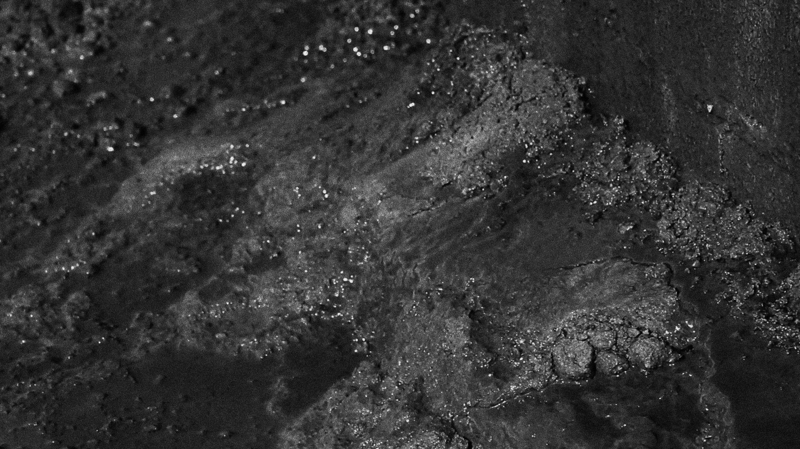
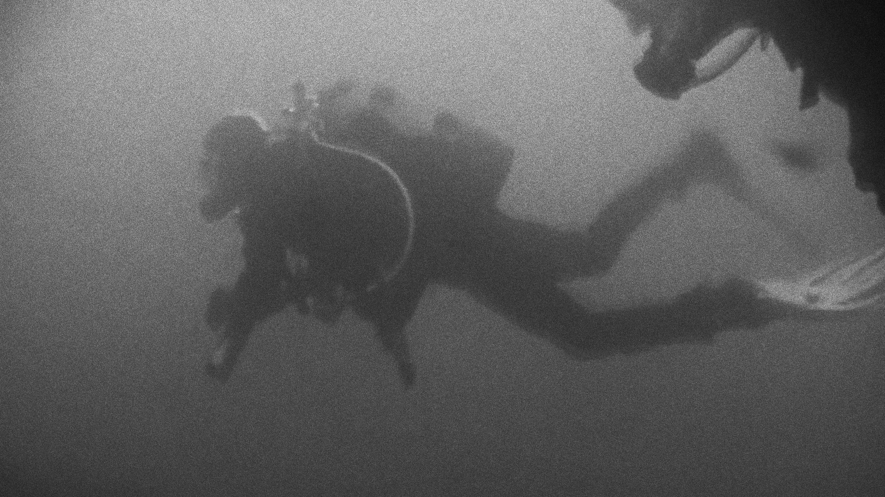
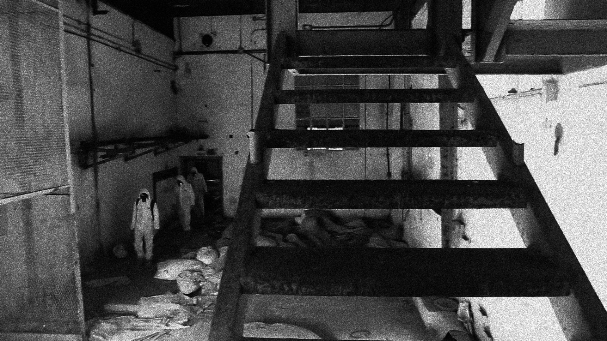